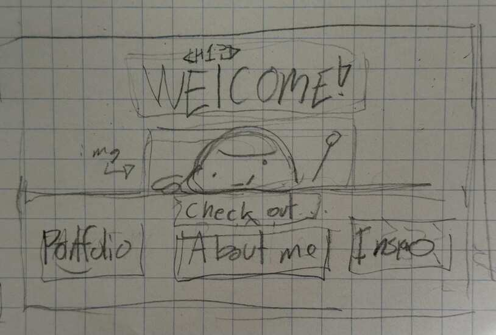

Welcome!

Check out my...
About!
Inspo!
Hirchy!
The Sketchbook!
CSS Practice!
Directions are weird. I'm turning this on its own, no navigation yet. That will be on the sketchbook page. Why would I turn the same EXACT thing in twice?
Now, onto the meat of this. I always wanted to be very welcoming. Joyful. So, I wanted the first thing a
visitor to see was, well, a welcome. So that's what I did! "WELCOME!" as seen by the title and draftpage.
Anyway. Now it's naviagationable, witht no links. So. There's that to be done. But that's in the next assignment.